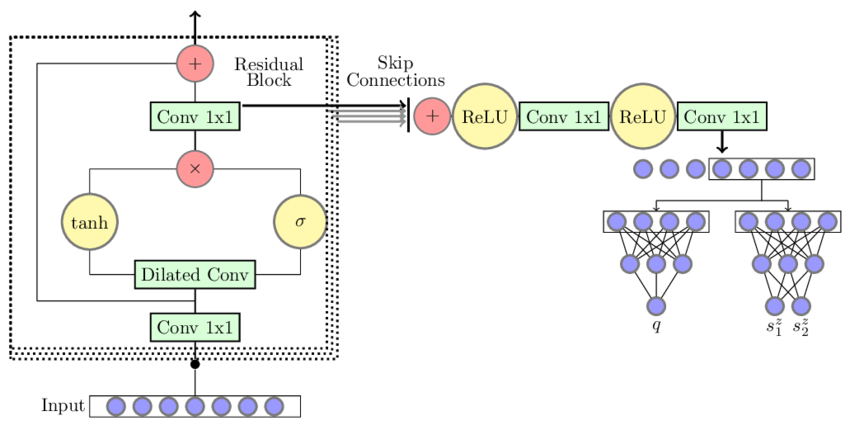

This is my study notes / codes along with Andrej Karpathy’s “Neural Networks: Zero to Hero” series.
Codes are executed in Colab, this calculation capacity exceeds my computer’s ability.
1 intro
We are going to take the 2-layer MLP in the part 3 of makemore and complexify it by:
- extending the block size: from 3 to 8 characters;
- making it deeper rather than 1 hidden layer.
then end of with a Convoluntional Neural Network architecture similar to WaveNet (2016) by Google DeepMind.

starter code walk through
import libraries
reading data
building vocab
Show the code
# build the vocabulary of characters and mapping to/from integer
chars = sorted(list(set(''.join(words))))
stoi = {s:i+1 for i, s in enumerate(chars)}
stoi['.'] = 0
itos = {i: s for s, i in stoi.items()}
vocab_size = len(itos)
print(itos)
print(vocab_size)
# itos: {1: 'a', 2: 'b', 3: 'c', 4: 'd', 5: 'e', 6: 'f', 7: 'g', 8: 'h', 9: 'i', 10: 'j',
# 11: 'k', 12: 'l', 13: 'm', 14: 'n', 15: 'o', 16: 'p', 17: 'q', 18: 'r', 19: 's', 20: 't',
# 21: 'u', 22: 'v', 23: 'w', 24: 'x', 25: 'y', 26: 'z', 0: '.'}
# vocab_size: 27initializing randomization
create train/dev/test splits
Show the code
block_size = 3 # context length: how many characters do we take to predict the next one?
# build the dataset
def buid_dataset(words):
X, Y = [], []
for w in words:
context = [0] * block_size
for ch in w + '.':
ix = stoi[ch]
X.append(context)
Y.append(ix)
context = context[1:] + [ix]
X = torch.tensor(X)
Y = torch.tensor(Y)
print(X.shape, Y.shape)
return X, Y
n1 = int(0.8 * len(words))
n2 = int(0.9 * len(words))
Xtr, Ytr = buid_dataset(words[:n1]) # 80#
Xdev, Ydev = buid_dataset(words[n1:n2]) # 10%
Xte, Yte = buid_dataset(words[n2:]) # 10%
# torch.Size([182625, 3]) torch.Size([182625])
# torch.Size([22655, 3]) torch.Size([22655])
# torch.Size([22866, 3]) torch.Size([22866])input and response preview
initializing objects in networks
Near copy paste of the layers we have developed in Part 3, I added some docstring to the classes.
class Linear
Show the code
class Linear:
"""
Applies an affine linear transformation to the incoming data: y = xA^T + b.
This class implements a linear (fully connected) layer, which performs a linear
transformation on the input tensor. It is typically used in neural network architectures
to transform input features between layers.
Args:
fan_in (int): Number of input features (input dimension).
fan_out (int): Number of output features (output dimension).
bias (bool, optional): Whether to include a learnable bias term.
Defaults to True.
Attributes:
weight (torch.Tensor): Weight matrix of shape (fan_in, fan_out),
initialized using Kaiming initialization.
bias (torch.Tensor or None): Bias vector of shape (fan_out),
initialized to zeros if bias is True, otherwise None.
Methods:
__call__(x): Applies the linear transformation to the input tensor x.
parameters(): Returns a list of trainable parameters (weight and bias).
Example:
>>> layer = Linear(10, 5) # Creates a linear layer with 10 input features and 5 output features
>>> x = torch.randn(3, 10) # Input tensor with batch size 3 and 10 features
>>> output = layer(x) # Applies linear transformation
>>> output.shape
torch.Size([3, 5])
"""
def __init__(self, fan_in, fan_out, bias=True):
self.weight = torch.randn((fan_in, fan_out)) / fan_in**0.5 # note: kaiming init
self.bias = torch.zeros(fan_out) if bias else None
def __call__(self, x):
self.out = x @ self.weight
if self.bias is not None:
self.out += self.bias
return self.out
def parameters(self):
return [self.weight] + ([] if self.bias is None else [self.bias])class BatchNorm1d
Show the code
class BatchNorm1d:
"""
Applies Batch Normalization to the input tensor, a technique to improve
training stability and performance in deep neural networks.
Batch Normalization normalizes the input across the batch dimension,
reducing internal covariate shift and allowing higher learning rates.
This implementation supports both training and inference modes.
Args:
dim (int): Number of features or channels to be normalized.
eps (float, optional): A small constant added to the denominator for
numerical stability to prevent division by zero.
Defaults to 1e-5.
momentum (float, optional): Momentum for updating running mean and
variance during training. Controls the degree of exponential
moving average. Defaults to 0.1.
Attributes:
eps (float): Epsilon value for numerical stability.
momentum (float): Momentum for running statistics update.
training (bool): Indicates whether the layer is in training or inference mode.
gamma (torch.Tensor): Learnable scale parameter of shape (dim,).
beta (torch.Tensor): Learnable shift parameter of shape (dim,).
running_mean (torch.Tensor): Exponential moving average of batch means.
running_var (torch.Tensor): Exponential moving average of batch variances.
Methods:
__call__(x): Applies batch normalization to the input tensor.
parameters(): Returns learnable parameters (gamma and beta).
Key Normalization Steps:
1. Compute batch mean and variance (in training mode)
2. Normalize input by subtracting mean and dividing by standard deviation
3. Apply learnable scale (gamma) and shift (beta) parameters
4. Update running statistics during training
Example:
>>> batch_norm = BatchNorm1d(64) # For 64-channel input
>>> x = torch.randn(32, 64) # Batch of 32 samples with 64 features
>>> normalized_x = batch_norm(x) # Apply batch normalization
>>> normalized_x.shape
torch.Size([32, 64])
Note:
- Supports both 2D (batch, features) and 3D (batch, channels, sequence) input tensors
- During inference, uses running statistics instead of batch statistics
"""
def __init__(self, dim, eps=1e-5, momentum=0.1):
self.eps = eps
self.momentum = momentum
self.training = True
# parameters (trained with backprop)
self.gamma = torch.ones(dim)
self.beta = torch.zeros(dim)
# buffers (trained with a running 'momentum update')
self.running_mean = torch.zeros(dim)
self.running_var = torch.ones(dim)
def __call__(self, x):
# calculate the forward pass
if self.training:
xmean = x.mean(dim, keepdim=True) # batch mean
xvar = x.var(dim, keepdim=True) # batch variance
else:
xmean = self.running_mean
xvar = self.running_var
xhat = (x - xmean) / torch.sqrt(xvar + self.eps) # normalize to unit variance
self.out = self.gamma * xhat + self.beta
# update the buffers
if self.training:
with torch.no_grad():
self.running_mean = (1 - self.momentum) * self.running_mean + self.momentum * xmean
self.running_var = (1 - self.momentum) * self.running_var + self.momentum * xvar
return self.out
def parameters(self):
return [self.gamma, self.beta]class Tanh
Show the code
class Tanh:
"""
Hyperbolic Tangent (Tanh) Activation Function
Applies the hyperbolic tangent activation function element-wise to the input tensor.
Tanh maps input values to the range [-1, 1], providing a symmetric and non-linear
transformation that helps neural networks learn complex patterns.
Mathematical Definition:
tanh(x) = (e^x - e^-x) / (e^x + e^-x)
Key Characteristics:
- Output Range: [-1, 1]
- Symmetric around the origin
- Gradient is always less than 1, which helps mitigate the vanishing gradient problem
- Commonly used in recurrent neural networks and hidden layers
Methods:
__call__(x): Applies the Tanh activation to the input tensor.
parameters(): Returns an empty list, as Tanh has no learnable parameters.
Attributes:
out (torch.Tensor): Stores the output of the most recent forward pass.
Example:
>>> activation = Tanh()
>>> x = torch.tensor([-2.0, 0.0, 2.0])
>>> y = activation(x)
>>> y
tensor([-0.9640, 0.0000, 0.9640])
Note:
This implementation is stateless and does not modify the input tensor.
The activation is applied element-wise, preserving the input tensor's shape.
"""
def __call__(self, x):
self.out = torch.tanh(x)
return self.out
def parameters(self):
return []random number generator
network architecture
Show the code
# original network
n_embd = 10 # the dimensionality of the character embedding vectors
n_hidden = 200 # the number of neurons in the hidden layer of the MLP
C = torch.rand((vocab_size, n_embd))
layers = [
Linear(n_embd * block_size, n_hidden, bias=False),
BatchNorm1d(n_hidden),
Tanh(),
Linear(n_hidden, vocab_size),
]
# parameter init
with torch.no_grad():
layers[-1].weight *= 0.1 # last layer make less confident
parameters = [C] + [p for layer in layers for p in layer.parameters()]
print(sum(p.nelement() for p in parameters)) # number of parameters in total
for p in parameters:
p.requires_grad = True
# model params: 12097optimization
Show the code
# same optimization as last time
max_steps = 200000
batch_size = 32
lossi = []
for i in range(max_steps):
# minibatch construct
ix = torch.randint(0, Xtr.shape[0], (batch_size,))
Xb, Yb = Xtr[ix], Ytr[ix] # batch X,Y
# forward pass
emb = C[Xb] # embed the characters into vectors
x = emb.view(emb.shape[0], -1) # concatenate the vectors
for layer in layers:
x = layer(x)
loss = F.cross_entropy(x, Yb) # loss function
# backward pass
for p in parameters:
p.grad = None
loss.backward()
# update: simple SGD
lr = 0.1 if i < 150000 else 0.01 # step learning rate decay
for p in parameters:
p.data += -lr * p.grad
# track stats
if i % 10000 == 0: # print every once in a while
print(f'{i:7d}/{max_steps:7d}: {loss.item():.4f}')
lossi.append(loss.log10().item()) 0/ 200000: 3.2885
10000/ 200000: 2.3938
20000/ 200000: 2.1235
30000/ 200000: 1.9222
40000/ 200000: 2.2440
50000/ 200000: 2.1108
60000/ 200000: 2.0624
70000/ 200000: 2.0893
80000/ 200000: 2.4173
90000/ 200000: 1.9744
100000/ 200000: 2.0883
110000/ 200000: 2.4538
120000/ 200000: 1.9535
130000/ 200000: 1.8980
140000/ 200000: 2.1196
150000/ 200000: 2.3550
160000/ 200000: 2.2957
170000/ 200000: 2.0286
180000/ 200000: 2.2379
190000/ 200000: 2.3866observe training process/evaluation
lossi plot at the beginningcalibrate the batchnorm after training
We should be using the running mean/variance of the whole dataset splits rather than the last mini-batch.
calculate on whole training and validation splits
Show the code
# evaluate the loss
@torch.no_grad() # this decorator disables gradient tracking inside pytorch
def split_loss(split):
x,y = {
'train': (Xtr, Ytr),
'val': (Xdev, Ydev),
'test': (Xte, Yte),
}[split]
logits = model(x)
loss = F.cross_entropy(logits, y)
print(split, loss.item())
split_loss('train')
split_loss('val')Pretty loss but there are still room for improve:
sample from the model
Here are Names generated by the model till now, we have relatively name-like results that do not exist in the training set.
let’s fix the learning rate plot
The plot for lossi looks very crazy, it’s because the batch size of 32 is way too few so this time we got lucky, and next time we got unlucky. And the mini-batch loss splashed too much. We should probably fix it.
We pivot to a row for every 1000 observations of lossi and calculate the mean, we end up have 200 observations which is easier to see.
We can also observe the learning rate decay at 150k training loops.
lossi plot fixedpytorchifying our code: layers, containers, torch.nn, fun bugs
Now we notice that we still have the embedding operation lying outside the pytorch-ified layers. It basically creating a lookup table C, embedding it with our data Y (or Yb), then stretching out to row with view() which is very cheap in PyTorch as no more memory creation is needed.
We modulize this by constructing 2 classes:
Show the code
class Embedding:
def __init__(self, num_embeddings, embedding_dim):
self.weight = torch.randn((num_embeddings, embedding_dim))
def __call__(self, IX):
self.out = self.weight[IX]
return self.out
def parameters(self):
return [self.weight]
# -----------------------------------------------------------------------------------------------
class Flatten:
def __call__(self, x):
self.out = x.view(x.shape[0], -1)
return self.out
def parameters(self):
return []Now we can re-define the layers like this:
and also remove the C, emb definition in the forward pass construction. Going futher, we will be not only pytorchifying the elements of layers only, but also the layers itself. In PyTorch, we have term containers, which specifying how we organize the layers in a network. And what are we doing here is constructing layers sequentially, which is equivalent to Sequential in the containers:
Show the code
class Sequential:
def __init__(self, layers):
self.layers = layers
def __call__(self, x):
for layer in self.layers:
x = layer(x)
self.out = x
return self.out
def parameters(self):
# get parameters of all layers and stretch them out into one list
return [p for layer in self.layers for p in layer.parameters()]and wrapp the layers into our model:
2 implementing WaveNet
So far with the classical MLP following Bengio et al. (2003), we have a embedding layer followed by a hidden layer and end up with a activation layer. Although we added more layer after the embedding, we could not make a significant progress.
The problem is we dont have a naive way of making the model bigger in a productive way. We are still in the case that we crushing all the characters into a single all the way at the begining. And even if we make this a bigger layer and add neurons it’s still like silly to squash all that information so fast into a single step.
overview: WaveNet
WaveNet idea - Progressive Fusiondataset bump the context size to 8
first we change the block_size into 8 and now our dataset looks like:
........ ---> y
.......y ---> u
......yu ---> h
.....yuh ---> e
....yuhe ---> n
...yuhen ---> g
..yuheng ---> .
........ ---> d
.......d ---> i
......di ---> o
.....dio ---> n
....dion ---> d
...diond ---> r
..diondr ---> e
.diondre ---> .
........ ---> x
.......x ---> a
......xa ---> v
.....xav ---> i
....xavi ---> eThe model size now bumps up to 22k.
re-running baseline code on block_size = 8
Just by lazily extending the context size to 8, we can already improve the model a little bit, the loss on validation split now is around 2.045. The names generated now look prettier:
zamari.
brennis.
shavia.
wililke.
obalyid.
leenoluja.
rianny.
jordanoe.
yuvalfue.
ozleega.
jemirene.
polton.
jawi.
meyah.
gekiniq.
angelinne.
tayler.
catrician.
kyearie.
anderias.Let’s deem this as a baseline then we can start to implement WaveNet and see how far we can go!
implementing WaveNet
First, let’s revisit the shape of the tensors along the way of the forward pass in our neural net:
Show the code
# Look at a batch of just 4 examples
ix = torch.randint(0, Xtr.shape[0], (4,))
Xb, Yb = Xtr[ix], Ytr[ix]
logits = model(Xb)
print(Xb.shape)
Xb
# > torch.Size([4, 8]) # because the context length is now 8
# > tensor([[ 0, 0, 0, 0, 0, 0, 13, 9],
# [ 0, 0, 0, 0, 0, 0, 0, 0],
# [ 0, 0, 0, 11, 5, 18, 15, 12],
# [ 0, 0, 4, 15, 13, 9, 14, 9]])
# Output of the embedding layer, each input is translated
# to 10 dimensional vector
model.layers[0].out.shape
# > torch.Size([4, 8, 10])
# Output of Flatten layer, each 10-dim vector is concatenated
# to each other for all 8-dim context vectors
model.layers[1].out.shape
# > torch.Size([4, 80])
# Output of the Linear layer, take 80 and create 200 channels,
# just via matrix mult
model.layers[2].out.shape
# > torch.Size([4, 200])Now look into the Linear layer, which take the input x in the forward pass, multiply by weight and add the bias in (there is broadcasting here). So the transformation in this layer looks like:
Input x matrix here does not need to be 2 dimensional array. The matrix multiplication in PyTorch is quite powerfull, you can pass more than 2 dimensional array. And all dimensions will be preserved except the last one. Like this:
Which we want to improve now is not just flatten the 8 characters input too fast at the beginning, we want to group them pair by pair to process them in parallel.
Particularly for 8 characters block size we want to divide it into 4 groups ~ 4 pair of bigrams. We are increasing the dimensions of the batch.
How can we achieve this in PyTorch, we can index the odd and even indexes then pair them up.
Of course, PyTorch provide a more efficient way to do this, using view():
We are going to modulize the FlattenConsecutive:
and update the flatten layer to FlattenConsecutive(block_size) (8) in our model. We can observe the dimension of tensors in all layers:
This is what we have currently. But as said, we dont want to flatten too fast, so we gonna flatten by 2 character, here is the update of the model - 3 layers present the consecutive flatten 4 -> 2 -> 1:
Show the code
model = Sequential([
Embedding(vocab_size, n_embd),
FlattenConsecutive(2), Linear(n_embd * 2, n_hidden, bias=False), BatchNorm1d(n_hidden), Tanh(),
FlattenConsecutive(2), Linear(n_hidden*2, n_hidden, bias=False), BatchNorm1d(n_hidden), Tanh(),
FlattenConsecutive(2), Linear(n_hidden*2, n_hidden, bias=False), BatchNorm1d(n_hidden), Tanh(),
Linear(n_hidden, vocab_size),
])and here is tensors dimension flowing in forward pass:
Embedding : (4, 8, 10)
FlattenConsecutive : (4, 4, 20)
Linear : (4, 4, 200)
BatchNorm1d : (4, 4, 200)
Tanh : (4, 4, 200)
FlattenConsecutive : (4, 2, 400)
Linear : (4, 2, 200)
BatchNorm1d : (4, 2, 200)
Tanh : (4, 2, 200)
FlattenConsecutive : (4, 400)
Linear : (4, 200)
BatchNorm1d : (4, 200)
Tanh : (4, 200)
Linear : (4, 27)That’s is, we have successfully implemented the WaveNet.
training the WaveNet: first pass
Now assume we use the same size of network (number of neurons), let’s see if the loss can be improved. We change the n_hidden = 68, so that the total parameters of our network remain 22k. Below is update tensor dims for a batch (32):
Embedding : (32, 8, 10)
FlattenConsecutive : (32, 4, 20)
Linear : (32, 4, 68)
BatchNorm1d : (32, 4, 68)
Tanh : (32, 4, 68)
FlattenConsecutive : (32, 2, 136)
Linear : (32, 2, 68)
BatchNorm1d : (32, 2, 68)
Tanh : (32, 2, 68)
FlattenConsecutive : (32, 136)
Linear : (32, 68)
BatchNorm1d : (32, 68)
Tanh : (32, 68)
Linear : (32, 27)It turns out that we got almost identical result. There are 2 things:
- We just constructed the architecture of
WaveNetbut not tortured the model enough to find best set of hyperparameters; and - We may have a bug in
BatchNorm1dlayer, let’s take a look into this.
fixing batchnorm1d bug
Let’s look at the BatchNorm1d happen in the first flatten layer:
For ehat, everything is calculated properly, mean and variance are calculated to the batch and the 2nd dim 4 is preserved. But for the running_mean:
We see it is (1, 4, 68) while we are expected it’s 1 dimensional only which is defined in the init method (torch.zeros(dim)). We are maintaining the batch norm in parallel over 4 x 68 channels individually and independently instead of just 68 channels. We want to treat this 4 just like a batch norm dimension, ie everaging of 32 * 4 numbers for 68 channels. Fortunately PyTorch mean() method offer the reducing dimension not only for integer but also tuple.
We now modify the BatchNorm1d definition accordingly, only the training mean/var in the __call__ method:
Show the code
# ---- remains the same
def __call__(self, x):
# calculate the forward pass
if self.training:
if x.ndim == 2:
dim = 0
elif x.ndim == 3:
dim = (0,1)
xmean = x.mean(dim, keepdim=True) # batch mean
xvar = x.var(dim, keepdim=True) # batch variance
else:
xmean = self.running_mean
xvar = self.running_var
xhat = (x - xmean) / torch.sqrt(xvar + self.eps) # normalize to unit variance
self.out = self.gamma * xhat + self.beta
# ---- remaind the samere-training WaveNet with bug fix
Now retraining the network with bug fixed, we obtain a slightly better loss of 2.022. We just fixed the normalization term inside the network so they did not thrush too much so a little improvement only is expected.
scaling up our WaveNet
Now we’re ready to scale up our network and retrain everything, the model now have roughly 76k paramters. We finally passed the 2.0 threshold and achieved the loss of 1.99 on the validation split.
And here is final loss plot:

lossi final3 conclusions
performance log
| Step | What we did | Loss we got (accum) |
|---|---|---|
| 1 | original (3 character context + 200 hidden neurons, 12K params) | train 2.0467958450317383 val 2.0989298820495605 |
| 2 | context: 3 -> 8 (22K params) | train 1.9028635025024414 val 2.044949769973755 |
| 3 | flat -> hierarchical (22K params) | train 1.9366059303283691 val 2.017268419265747 |
| 4 | fix bug in batchnorm1d |
train 1.9156142473220825 val 2.0228867530822754 |
| 5 | scale up the network: n_embd 24, n_hidden 128 (76K params) |
train 1.7680459022521973 val 1.994154691696167 |
experimental harness
The “harness” metaphor is apt because it’s like a structured support system that allows researchers to systematically explore and optimize neural network configurations, much like a harness helps guide and support an athlete during training.
An experimental harness typically includes several key components:
- Hyperparameter Search Space Definition: This involves specifying the range of hyperparameters to be explored, such as:
- Learning rates
- Batch sizes
- Network architecture depths
- Activation functions
- Regularization techniques
- Dropout rates
- Search Strategy: Methods for exploring the hyperparameter space, which can include:
- Grid search
- Random search
- Bayesian optimization
- Evolutionary algorithms
- Gradient-based optimization techniques
- Evaluation Metrics: Predefined metrics to assess model performance, such as:
- Validation accuracy
- Loss function values
- Precision and recall
- F1 score
- Computational efficiency
- Automated Experiment Management: Tools and scripts that can:
- Automatically generate and run different model configurations
- Log results
- Track experiments
- Compare performance across different hyperparameter settings
- Reproducibility Mechanisms: Ensuring that experiments can be repeated and validated, which includes:
- Fixed random seeds
- Consistent data splitting
- Versioning of datasets and configurations
WaveNet but with “dilated causal convolutions”
- Convolution is a “for loop” applying a linear filter over space of some input sequence;
- Not happen only in Python but also in Kernel
torch.nn
We have implement alot of concepts in torch.nn:
- containers:
Sequential Linear,BatchNorm1d,Tanh,FlattenConsecutive, …
the development process of building deep neural nets & going forward
- Spending a ton of time exploring PyTorch documentation, unfortunately it’s not a good one;
- Ton of time to make the shapes work: fan in, fan out, NLC or NLC, broadcasting, viewing, etc;
- What we:
- done: implemented dilated causal convoluntional network;
- to be explores: residual and skip connections;
- to be explores: experimental harness;
- more mordern networks: RNN, LSTM, Transformer.
4 resources
- WaveNet 2016 from DeepMind: https://arxiv.org/abs/1609.03499;
- Bengio et al. 2003 MLP LM: https://www.jmlr.org/papers/volume3/bengio03a/bengio03a.pdf;
- Notebook: https://github.com/karpathy/nn-zero-to-hero/blob/master/lectures/makemore/makemore_part5_cnn1.ipynb;
- DeepMind’s blog post from 2016: https://deepmind.google/discover/blog/wavenet-a-generative-model-for-raw-audio/